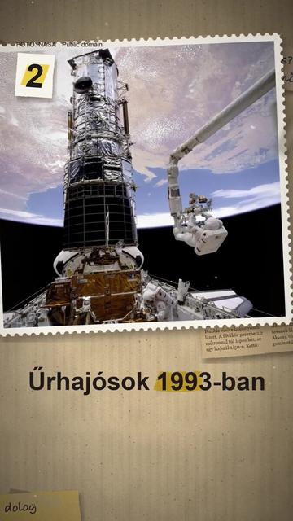

Megnézem a YouTube-on3 dolog, amit nem tudtál a Hubble-űrtávcsőről
Röviden: A Hubble-űrtávcső első képei elmosódottak voltak: a NASA szerint a főtükör külső pereme 2,2 mikronnal túl laposra csiszolódott, ami nagyjából egy emberi hajszál vastagságának ötvenede (gömbi hiba).
A Hubble-űrtávcső első képei elmosódottak voltak: a NASA szerint a főtükör külső pereme 2,2 mikronnal túl laposra csiszolódott, ami nagyjából egy emberi hajszál vastagságának ötvenede (gömbi hiba). 1993 decemberében az STS-61 küldetés űrhajósai a pályán javító optikát szereltek be, amely a NASA hasonlatával úgy korrigálta a hibát, ahogy a szemüveg a látást. A Hubble az első űrobszervatórium, amelyet eleve úgy terveztek, hogy űrhajósok szervizeljék; öt szervizküldetés járt nála. 1995-ben 10 napig egy viszonylag üresnek látszó égfoltot figyelt a Göncölszekér nyele közelében: a folt akkora, mint egy gombostűfej kinyújtott karnyi távolságból, és a Hubble Deep Field képén nagyjából 3000 távoli galaxis látszik (az első becslés 1500 volt). Források: a NASA Science Hubble-oldalai (lent).
Az összes rész forrásokkal: https://valoban.pages.dev/
Források
- NASA Science: Servicing Mission 1 (SM1)
- NASA Science: The History of Hubble
- NASA Science: Missions to Hubble
- NASA Science: Hubble's Deep Fields
- ESA/Hubble: The history of Hubble
5 forrás · Hogyan ellenőrzünk?
Hibát találtál? Írd meg nekünk, megnézzük.
Képek és kreditek
• Az M100 galaxis a javítás előtt és után, 1993 (NASA) – NASA, Public domain (https://creativecommons.org/publicdomain/mark/1.0/) https://commons.wikimedia.org/?curid=6459870
• A főtükör csiszolása a Perkin-Elmer műhelyében (NASA MSFC) – NASA, Public domain (https://creativecommons.org/publicdomain/mark/1.0/) https://commons.wikimedia.org/?curid=1900102
• Mérnökök a főtükörnél, Perkin-Elmer (NASA) – NASA, Public domain (https://creativecommons.org/publicdomain/mark/1.0/) https://commons.wikimedia.org/?curid=29331195
• A Hubble kiemelése a Discovery rakteréből, 1990 (NASA) – NASA, Public domain (https://creativecommons.org/publicdomain/mark/1.0/) https://commons.wikimedia.org/?curid=6061227
• Thornton és Akers beszereli a COSTAR javító optikát, STS-61, 1993 (NASA) – NASA, Public domain (https://creativecommons.org/publicdomain/mark/1.0/) https://commons.wikimedia.org/?curid=70819454
• Musgrave és Hoffman az első szervizküldetésen, 1993 (NASA) – NASA, Public domain (https://creativecommons.org/publicdomain/mark/1.0/) https://commons.wikimedia.org/?curid=6449691
• A Hubble az SM4 szervizküldetés után, 2009 (NASA) – NASA, Public domain (https://creativecommons.org/publicdomain/mark/1.0/) https://commons.wikimedia.org/?curid=6826183
• Hubble Deep Field, 1995. december (R. Williams, NASA / STScI) – Robert Williams, Hubble Deep Field Team (NASA / STScI), Public domain (https://creativecommons.org/publicdomain/mark/1.0/) https://commons.wikimedia.org/?curid=396007
A képek módosítva: 9:16-ra kivágva, átméretezve, kameramozgással, ráégetett felirattal.